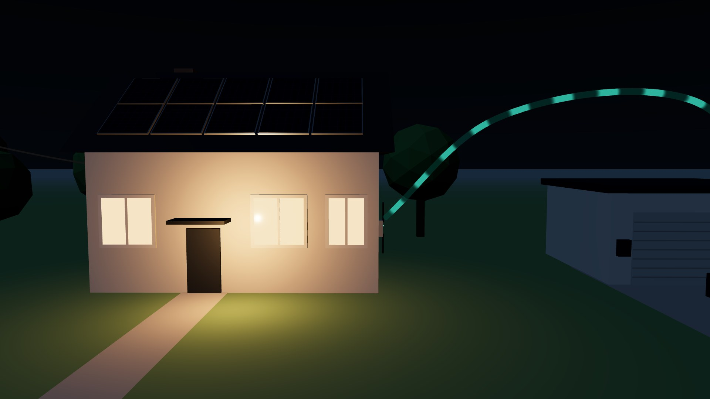
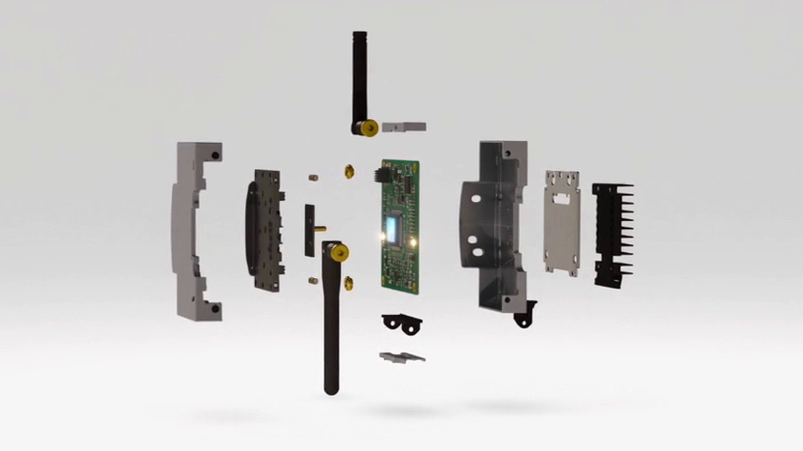
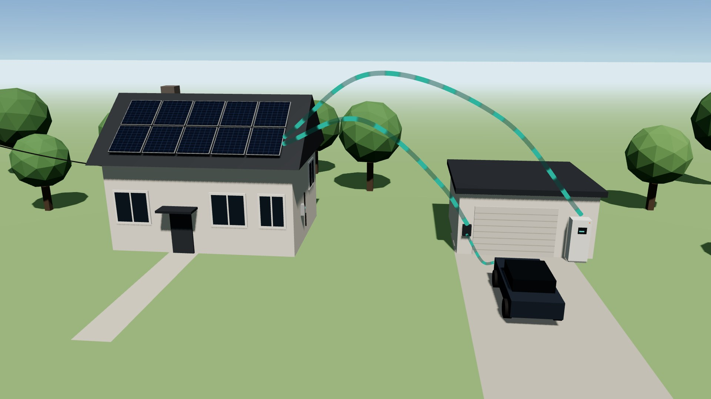
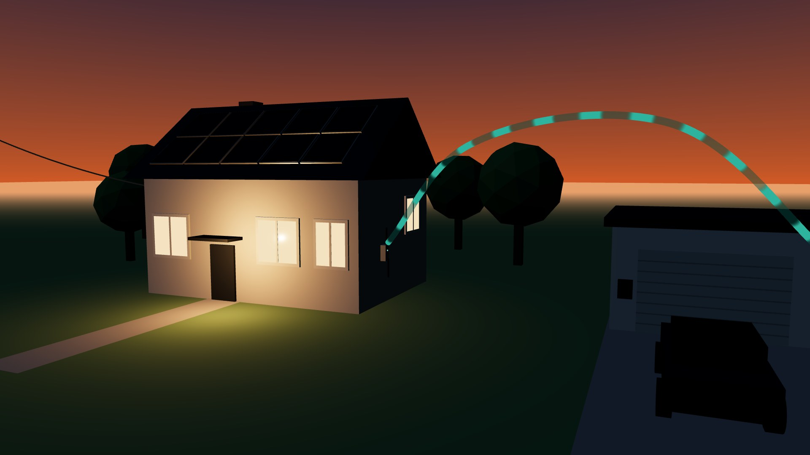

Magazyn energii z EMS, który sam decyduje, kiedy ładować, a kiedy oddać energię domowi. Projektujemy i produkujemy w Polsce.
Ciemny granat i turkus, jak wersja 2 i strona ems-zmiany, która podobała Ci się najbardziej. Zmieniają się obrazy: zamiast zdjęć stockowych nasz własny dom 3D wieczorem, zasilany z magazynu. To ten sam świat, co w filmach. Strona i wideo wyglądają jak jedna marka.
Sluxer EMS sam decyduje, gdzie płynie energia z Twoich paneli – do magazynu, auta czy domu – i pilnuje rachunku co 15 minut.

LoRa 433 MHz · do 3 km 5 źródeł danych 0,00 kWh co 15 min 3 tryby pracy Szyna DIN NIS2 · CRA · RED DACiepła biel, czarny tusz i ciemny turkus, jak jasne plansze w filmie. Produkt jest bohaterem: rozłożony na części, a etykiety przypinają się do elementów przy przewijaniu. Najlepiej tłumaczy technologię i wygląda „premium”, ale wymaga bardzo dobrych zdjęć produktów na jasnym tle.


W południe Twoje panele dają najwięcej. Sluxer EMS odkłada tę energię do magazynu – zamiast oddawać ją do sieci za grosze.
Wtedy, gdy wracasz do domu, gotujesz i ładujesz auto, energia z sieci kosztuje najwięcej.
Bez kucia ścian – magazyn może stać w garażu, EMS łączy się z nim bezprzewodowo. Działa nawet bez internetu.
Przewijanie to upływ czasu: góra strony to południe, im niżej, tym później, a tło przechodzi z jasnego w noc. Widz w kilka sekund rozumie, po co jest magazyn – zanim przeczyta jakąkolwiek specyfikację. To ta sama historia, co w filmie, więc strona i wideo wzajemnie się wzmacniają. Dalsze sekcje (ceny, dotacja, dane) są już spokojne i jasne.
Projektujemy i produkujemy w Polsce. Spełnia wymogi programu PME2 według deklaracji producenta – dotacja 30% kosztu, maks. 800 zł/kWh, wniosek po montażu.